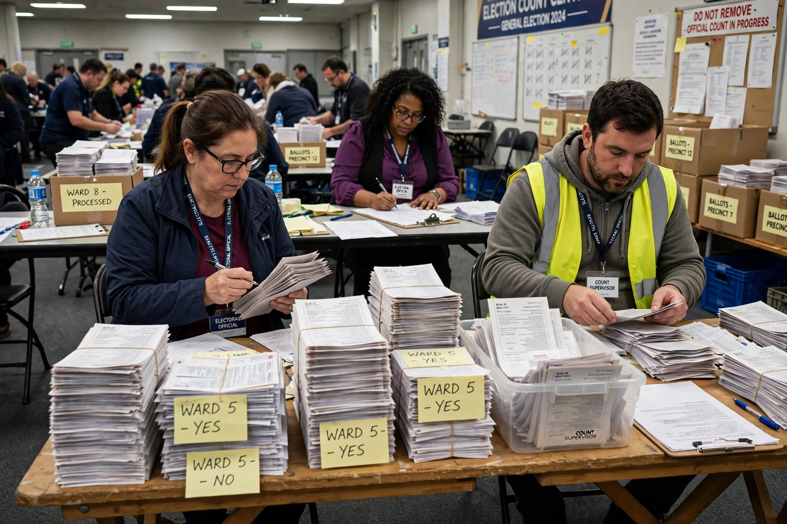

Wasted vote
From Wikipedia, the free encyclopedia

A wasted vote is a vote cast in an election that does not help to elect a candidate. The term is used in two main senses: votes cast for a losing candidate, and 'surplus' votes cast for a winning candidate beyond the number needed to win. The concept is central to debates about Electoral reform and the fairness of first-past-the-post elections.
In plurality systems
Under plurality voting in single-member districts, every vote for a losing candidate is wasted, as is every vote for the winner beyond a one-vote margin. In UK and US elections the wasted proportion can approach half of all votes cast, and it underlies the tactical voting dilemma: supporters of third parties may vote for a less-preferred major candidate to avoid 'wasting' their vote, reinforcing Duverger's law.
Measurement
Political scientists measure wasted votes with the efficiency gap, used in gerrymandering litigation in the United States: the difference between the two parties' wasted votes, divided by total votes. In Gill v. Whitford (2018) the US Supreme Court declined to adopt it as a legal standard, but the metric remains widely used in scholarship.
In proportional systems
Proportional representation reduces wasted votes, but legal thresholds (such as Germany's and Turkey's) still waste votes cast for parties falling below the threshold. Systems with vote transfer, like the Single transferable vote, recycle surplus and some losing votes through preferences, minimising waste by design.